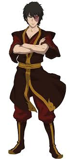

|  |
Known for one of the best redemption arcs in all of fiction, Zuko's heart is as almost as good as his firebending which he used to help the Avatar and save the world |
‣Firebending
‣Twin Swords
‣Lightning Redirection
‣Martial Arts
‣Tracking
|
|
After losing his uncle, Peter Parker uses his powers to save and protect New York City and the whole universe with the Avengers and is by far, the most popular Marvel character and superhero |
‣Super Strength
‣Superhuman Speed
‣Superhuman Agility
‣Genius level intellect
‣Advanced tech
‣Wall-Climbing
‣Way of The Spider
‣Spider Sense
‣Web Shooter
|
|
Born with immense power and speed, Sonic tries protecting the universe alongside his friends against all sorts of threats and is one of, if not the most popluar video game character in the world |
‣Super Speed
‣Chaos Emeralds
‣Master Emerald
‣Power Rings
‣Intangibility
‣Hand-to-hand
‣Chaos Energy
‣Transformations
|
 |
Originally made to cause terror in the universe, Stitch's purpose would eventually be challenged with his growing friendship with Lilo and his design makes him loved by many |
‣Super Strength
‣Nigh Invulnerability
‣Enhanced intelligence
‣Wall-crawling
‣Superhuman speed
‣Superhuman agility
‣Quadrepedalism
‣Shapeshifting
‣Electromagnetic Senses
|
|
As the last Night Fury and an alpha dragon, Toothless is a very powerful dragon with a big heart who will not hesistate to protect his loved ones which is why many people love him so much |
‣Flight
‣Super strength
‣Supersonic speeds
‣Plasma Blast
‣Enhanced senses
‣Night vision
‣Lightning Manipulation
‣Cloaking
‣Alpha Form
‣Echolocation
|